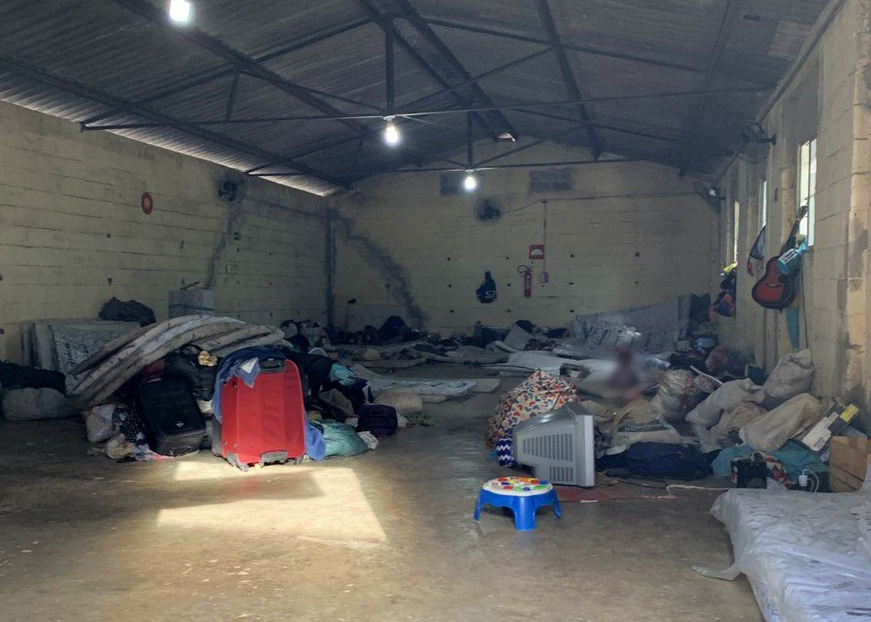

Representantes do Ministério Público de Minas Gerais (MPMG) fizeram inspeção no Abrigo São Paulo, no bairro Primeiro de Maio, na Região Norte de Belo Horizonte, nesta quinta-feira (28). Movimentos sociais criticam a demora na transferência de mais de 70 refugiados venezuelanos – alojados no espaço há um mês – que deveria atender apenas à população sem-teto. O MPMG instaurou procedimento para acompanhar a denúncia de péssimas condições do alojamento.

A equipe do MPMG chegou ao abrigo por volta das 8h30 e a visita, que durou cerca de três horas, foi definida em uma reunião com representantes do Tribunal de Justiça de Minas Gerais (TJMG), Prefeitura de Belo Horizonte (PBH) e o Alto-comissariado das Nações Unidas para Refugiados. Os representantes do MPMG não gravaram entrevista, mas disseram que os refugiados pertencem a 12 famílias. Os indígenas pediram que o atendimento daqui para frente seja feito para cada grupo, separadamente. O Abrigo São Paulo é destinado a pessoas sem-teto, mas um anexo do prédio tem sido usado para atender aos mais de 70 refugiados da etnia Warao. Nesta semana, a Defensoria Pública de Minas Gerais (DPMG) também esteve no local e afirmou que ele não serve para o acolhimento de famílias, e que os indígenas, em sua maioria mulheres e crianças, estão amontoados de forma insalubre, separados apenas por uma tela de proteção dos outros abrigados.
